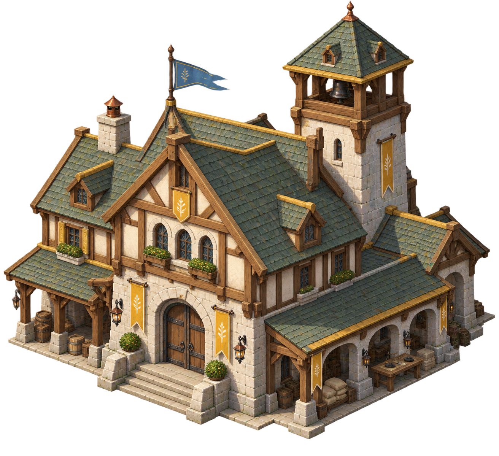
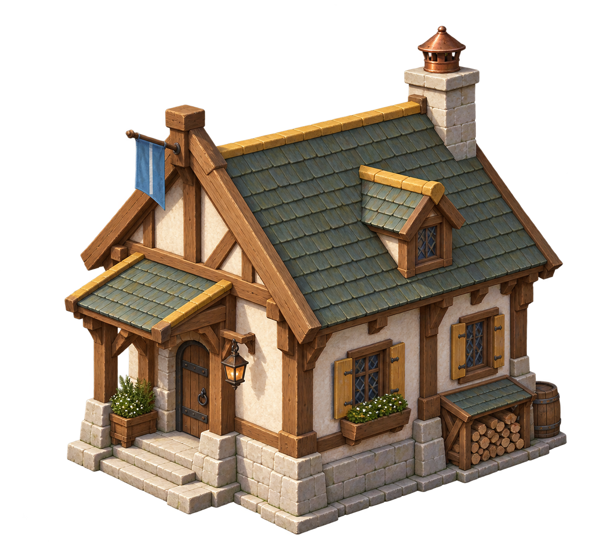
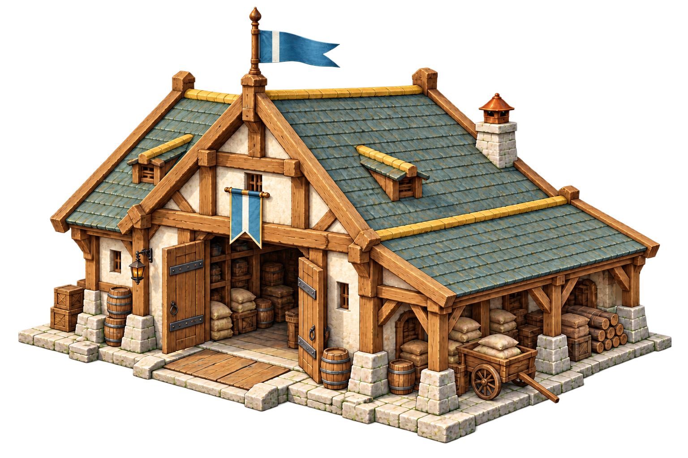
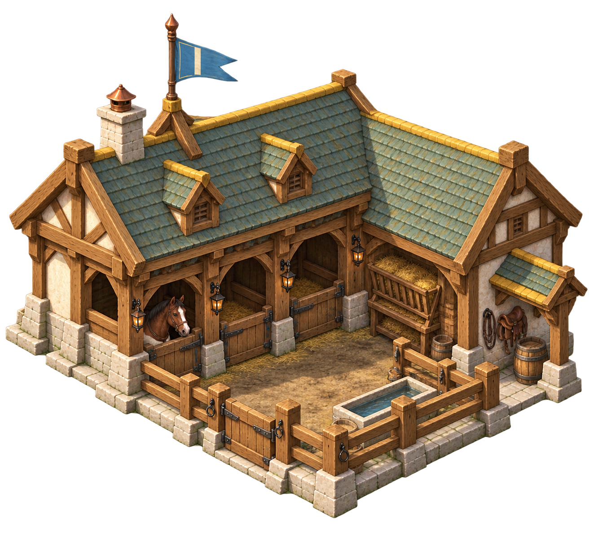
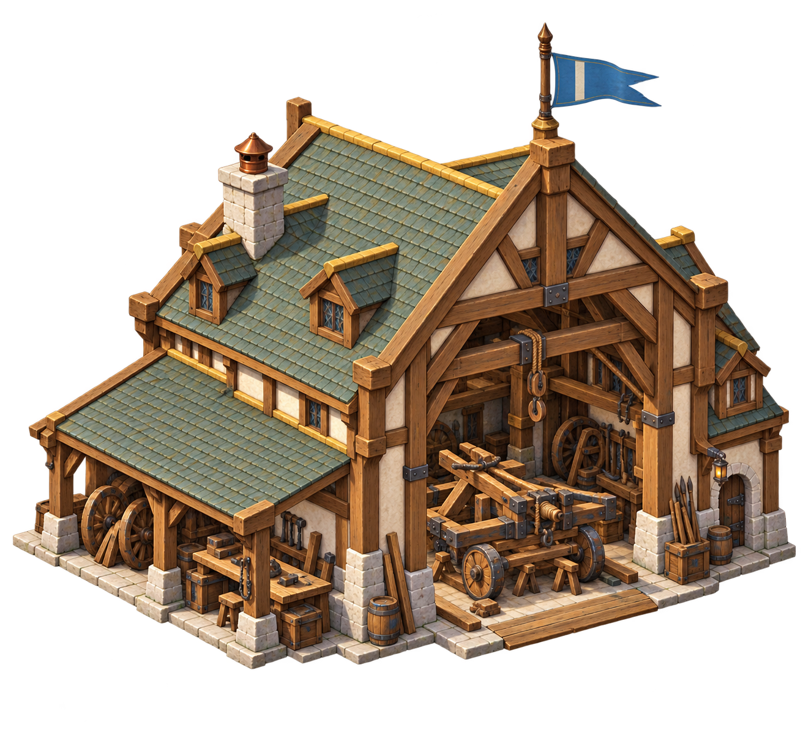
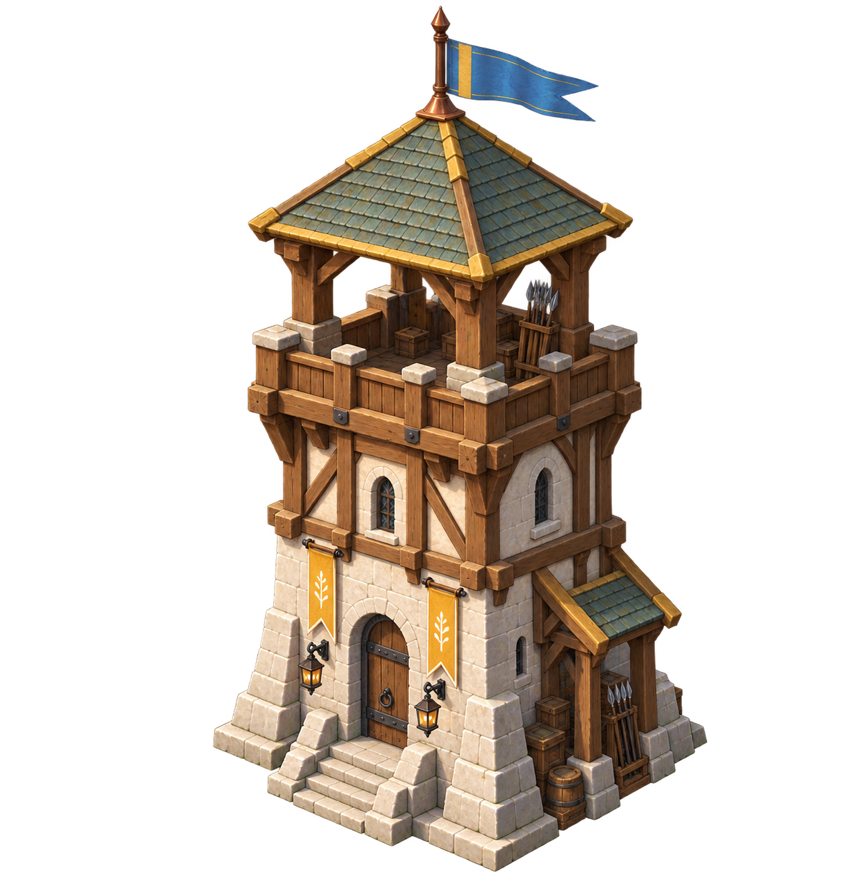
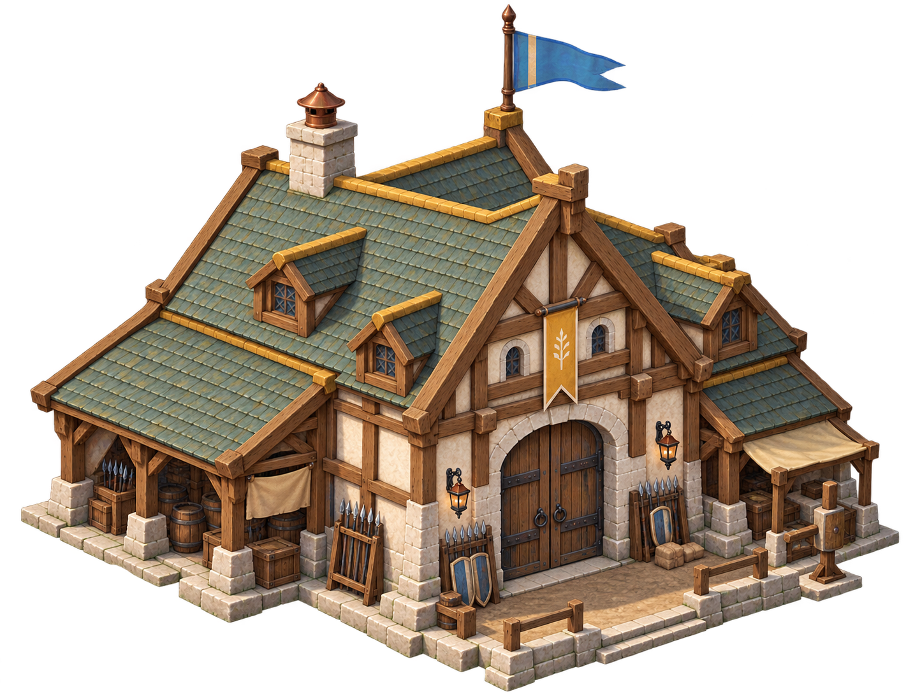
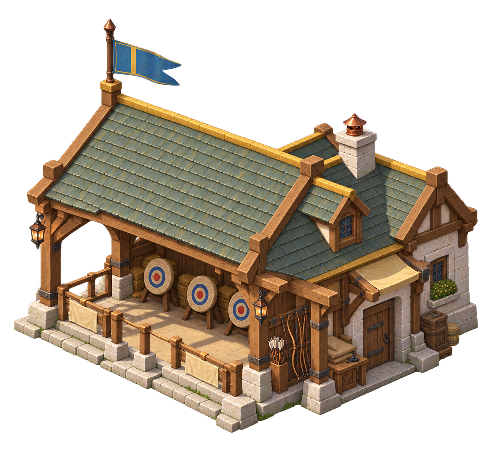

Town Center
Civic hall, workers and resource delivery

House
Domestic cottage and population

Storehouse
Loading bay, food and wood

Stable
Open stalls and mounted units

Workshop
Engineering bay and siege machinery

Watchtower
Elevated defensive lookout

Barracks
Enclosed military hall

Archery Range
Open shooting pavilion and targets